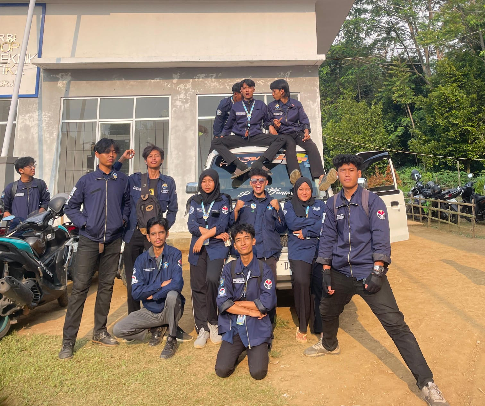
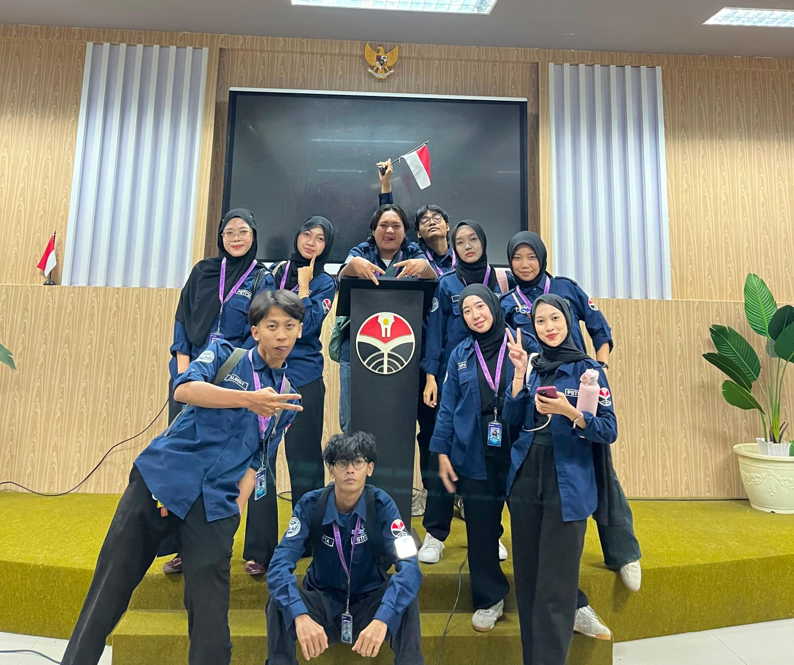
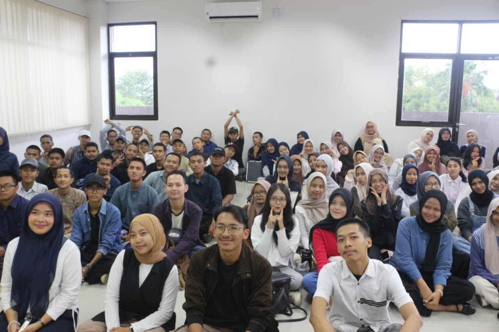
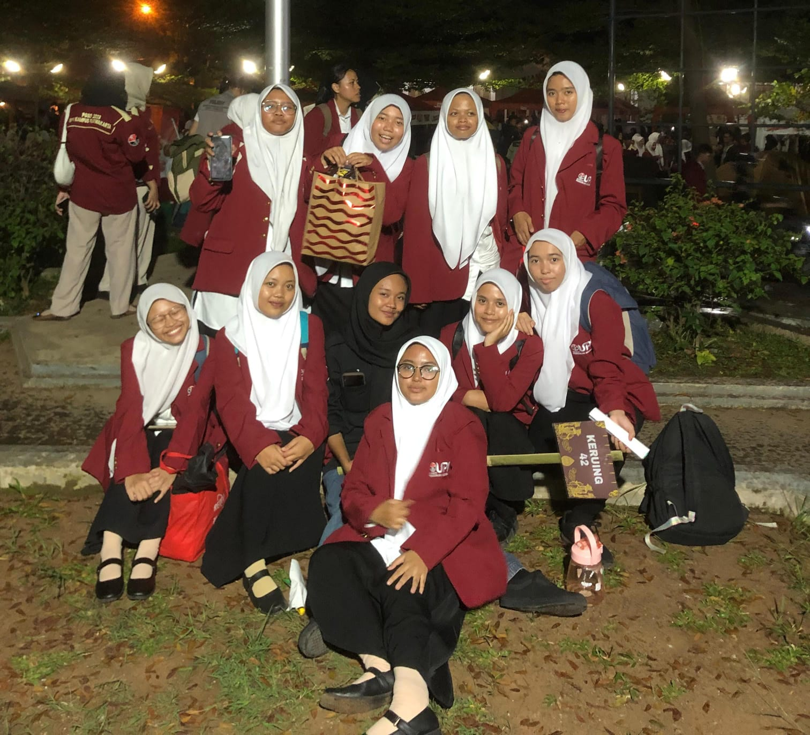
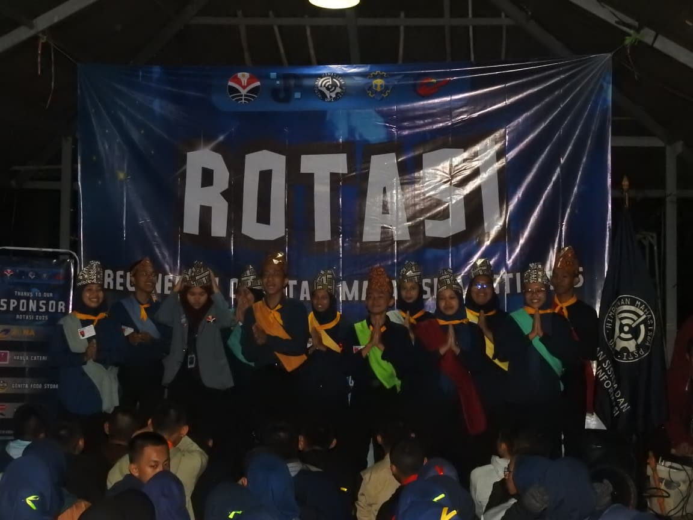

SOSIAL PROJECT HIMA PSTI
Tahun: 2026
Aksi nyata "Membangun Desa Lewat Jejak Kepedulian" mahasiswa UPI di pelosok desa Sindangpanon, Kecamatan Bojong, Purwakarta.

MIKASI ESTIFEST
Tahun: 2026
Festival dan ajang kompetisi kreativitas tahunan yang diselenggarakan HIMA PSTI

NATIONAL BUSINESS PLAN COMPETITION
Tahun: 2026
Kompetisi "Generasi Entrepreneur: Inovasi, Kreativitas dan Ketahanan Bisnis Masa Depan" yang diselenggarakan FMIPA Universitas Mataram, Lombok, NTB.

KUMANG I
Tahun: 2025
Kegiatan muatan wajib kaderisasi jurusan, bounding dan temu perdana "Nexoraty".

MOKAKU UPI
Tahun: 2025
Kaderisasi kampus yang membentuk "Sektor 42 Keruing" menjadi ruang paling aman dan nyaman dengan ragam teman prodi lainnya.

ROTASI
Tahun: 2025
Sektor 2 Cybersecurity: Sleyer kuning kunyit. Kaderisasi jurusan yang memberikan inside lebih mendalam tentang program studi dan prospek lulusan.
